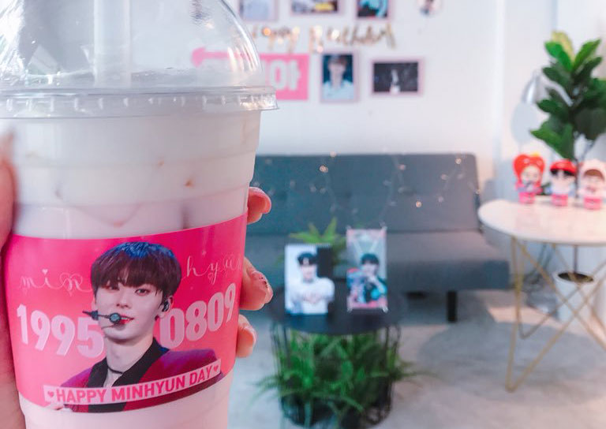
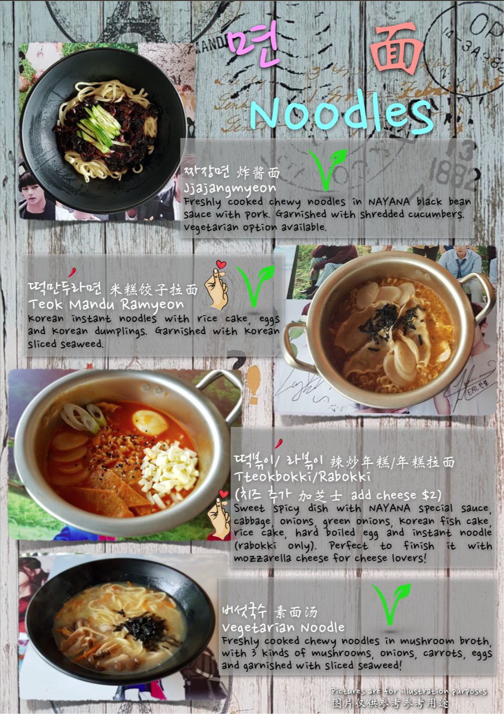

о ресторане
О ресторане
Меню, которое точно вам понравится
Всё о замечательном шеф поваре и создателе
Наш топ лист треков в жанре k-pop которые вы можете услышать в ресторанчике
В нашем ресторане, ты можешь попробовать много блюд из твоих любимых "дорам" . Фирменное наше блюдо это Самгёпсаль из сочной свинины и Кимчи собственного производства! Меню представлено ниже
